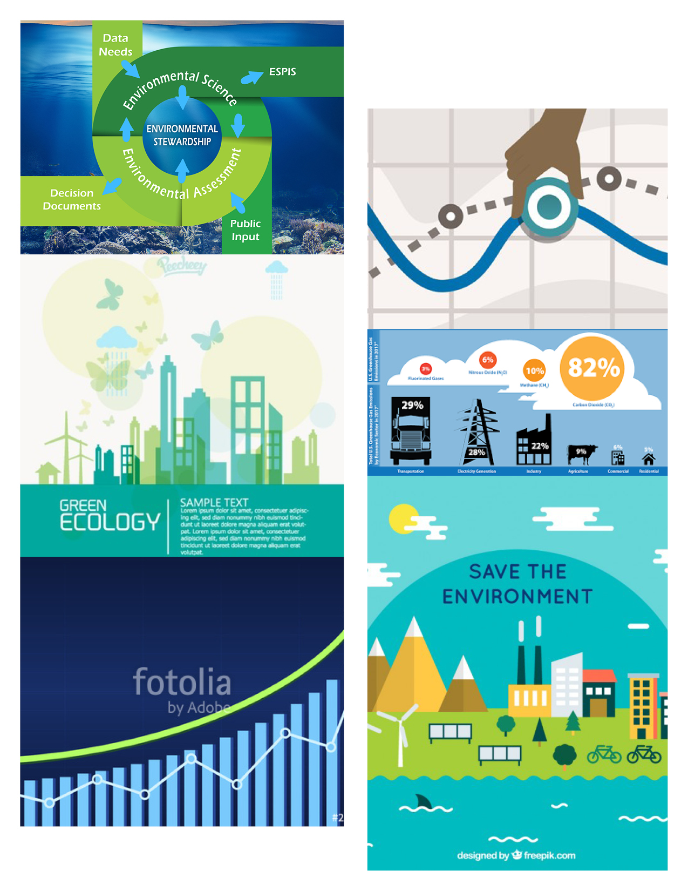

This project was a seventy-six-second animated infographic that explores the topic of plastic pollution. The task was to balance the use of kinetic typography with the use of graphics.
Research Findings
Plastic products generate toxic wastes and emissions which lead to environmental costs and environmental impacts. In the same way, if manufacturers don’t deal with waste polyurethane foam properly, the people who live nearby their factories can be affected, especially their health.
Even though there are multiple treatments for plastic and polyurethane foam disposals, landfilling is still used by some developing countries. To reduce the problem of pollution, manufacturers need to provide better access to consumers when it comes to returning discarded products. Most importantly, manufacturers may choose to resort to reusable and renewable materials in the production of sustainable products.
Moodboard
This is a serious topic to human beings, but I didn’t want to express the depression in the whole video. Thus, I searched for images that consisted of bright color and dark color to convey different emotions, and then put these images together on the moodboards.

Style frame
I developed two different color themes for the project: I used light blue to bright up the video a little bit at the beginning of the video. Furthermore, I chose a grey to convey the sad and depressive information. Additionally, I tried to use different sizes and styles of fonts to fit different themes.
Graphics
Because of the one month time period I had to work on this project, I would like to focus on the whole story of the video. I found the free graphic sources on https://www.freepik.com/. Furthermore, I found some photos of the requisite object, and then used the auto tracing function on Adobe Illustrator in order to make it look like graphic objects.
Lessons Learned
I gained valuable experience in building an animation video for the first time. I realized that the most important part of making video is to review my video multiple times in order to find if there was any issue in the video. Such as if the text stayed on a keyframe too long, or if the text is easy to read. Overall, I learned a lot about the entire workflow and processes that needed to create a fluent animation that the viewers can immerse themselves in.